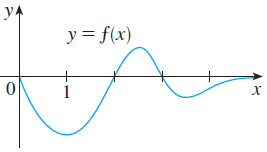

Skip to main content ☰ Contents You! < Prev ^ Up Next > \( \newcommand{\ds}{\displaystyle}
\newcommand{\lrpar}[1]{\left(#1\right)}
\newcommand{\lrbrace}[1]{\left\lbrace #1 \right\rbrace}
\newcommand{\inv}[1]{#1^{-1}}
\newcommand{\R}{\mathbb{R}}
\newcommand{\Z}{\mathbb{Z}}
\newcommand{\dc}{^\circ}
\newcommand{\lt}{<}
\newcommand{\gt}{>}
\newcommand{\amp}{&}
\definecolor{fillinmathshade}{gray}{0.9}
\newcommand{\fillinmath}[1]{\mathchoice{\colorbox{fillinmathshade}{$\displaystyle \phantom{\,#1\,}$}}{\colorbox{fillinmathshade}{$\textstyle \phantom{\,#1\,}$}}{\colorbox{fillinmathshade}{$\scriptstyle \phantom{\,#1\,}$}}{\colorbox{fillinmathshade}{$\scriptscriptstyle\phantom{\,#1\,}$}}}
\)
Section 3.9 Antiderivatives
Objectives
Explain the definition of an antiderivative and distinguish between particular and general antiderivatives
Apply antiderivatives formulas to find antiderivatives and recover position functions, possibly by using algebraic/trigonometric manipulation
Subsection 3.9.1 Before Class
https://mymedia.ou.edu/media/3.9-1/1_47ve5csuFigure 29. Pre-Class Video 1
Subsubsection 3.9.1.1 Derivatives
Function
Derivative
Function
Derivative
\(c\) \(0\) \(x^n\) \(nx^{n-1}\)
\(\sin x\) \(\cos x\) \(\cos x\) \(-\sin x\)
\(\tan x\) \(\sec^2 x\) \(\cot x\) \(-\csc^2 x\)
\(\sec x\) \(\sec x\tan x\) \(\csc x\) \(-\csc x\cot x\)
\(c\cdot f(x)\) \(c\cdot f'(x)\) \(f(x)\pm g(x)\) \(f'(x)\pm g'(x)\)
\(f(x)\cdot g(x)\) \(f'(x)g(x) + f(x)g'(x)\) \(\dfrac{f(x)}{g(x)}\) \(\dfrac{f'(x)g(x)-f(x)g'(x)}{[g(x)]^2}\)
\(f(g(x))\) \(f'(g(x))\cdot g'(x)\)
Subsubsection 3.9.1.2 The Antiderivative
Definition 3.9.1 . Antiderivative.
A function \(F\) is called an antiderivative of \(f\) on an interval \(I\) if \(F'(x) = f(x)\) for all \(x\in I\text{.}\)
Example 3.9.2 .
Find five antiderivatives for the function \(f(x) = 2x\text{.}\)
Question 3.9.3 .
How might we write the general antiderivative \(F(x)\) for \(f(x) = 2x\text{?}\)
Example 3.9.4 .
Find the most general antiderivative for the functions \(f(x) = \cos x\text{,}\) \(g(x) = x^n\) (\(n\geq 0\) ), and \(h(x) = x^{-2}\text{.}\)
Solution . \(F(x) = \sin x + C, G(x) = \dfrac{x^{n+1}}{n+1}+C, H(x) = -x^{-1} + C\)
A table of useful antiderivatives is given below:
Function
Antiderivative
Function
Antiderivative
\(0\) \(C\) \(k\) \(kx + C\)
\(x^n\) \(\dfrac{x^{n+1}}{n+1} + C\) \(\sin x\) \(-\cos x + C\)
\(\cos x\) \(\sin x + C\) \(\sec^2 x\) \(\tan x + C\)
\(\csc^2 x\) \(-\cot x + C\) \(\sec x\tan x\) \(\sec x + C\)
\(\cot x \csc x\) \(-\csc x\) \(c\cdot f(x)\) \(c\cdot F(x)\)
\(f(x)\pm g(x)\) \(F(x) \pm G(x)\)
Example 3.9.5 .
\(g'(x) = 3\sin x - \dfrac{9x^4-\sqrt[3]{x}}{x^2}\text{.}\) Find \(g(x)\text{,}\) the most general antiderivative of \(g\text{.}\)
Solution . \(g(x) = -3\cos x - 3x^3 - \dfrac{3}{2}x^{-2/3} + C\)
Example 3.9.6 .
Find \(f\) if \(f'(x) = x\sqrt{x}\) and \(f(1) = 5\text{.}\)
Solution . \(f(x) = \dfrac{2}{5}x^{5/2} + \dfrac{23}{5}\)
Subsection 3.9.2 Pre-Class Activities
Example 3.9.7 .
Find the most general antiderivative of the following functions; check your answer by differentiation.
\(\displaystyle f(x) = 5x + 3\)
\(\displaystyle f(x) = x(12x + 8)\)
\(\displaystyle g(x) = \sqrt{5}\)
\(\displaystyle h(x) = -3\sqrt{x} - 8\sqrt[3]{x}\)
\(\displaystyle k(x) = \dfrac{6}{x^7}\)
\(\displaystyle f(t) = \dfrac{5-4t^3 + 2t^6}{t^6}\)
Solution .
\(\displaystyle F(x) = \dfrac{5}{2}x^2 + 3x + C\)
\(\displaystyle F(x) = 4x^3 + 4x^2 + C\)
\(\displaystyle G(x) = x\sqrt{5}+ C\)
\(\displaystyle H(x) = -2x^{3/2} - 6x^{4/3} + C\)
\(\displaystyle k(x) = -x^{-6} + C\)
\(\displaystyle F(t) = -t^{-5} + 2t^{-2} + 2t + C\)
Subsection 3.9.3 In Class
General Antiderivative vs. Specific Antiderivative. A general antiderivative takes the form \(F(x) + C\text{,}\) while a specific antiderivative takes the form \(F(x)\text{.}\) For a specific antiderivative, we must have information about the value(s) of the original function.
Example 3.9.8 .
Find \(f\) if \(f''(x) = 12x^2+6x-4\text{,}\) \(f(0) = 4\text{,}\) and \(f(1) = 2\text{.}\)
Example 3.9.9 .
A particle moves in a straight line, and its acceleration is given by \(a(t) = 3t+2\text{.}\) Its initial velocity is \(v(0) = -3\) cm/s, and its initial displacement is \(s(0) = 5\) cm. Find the position function \(s(t)\text{.}\)
Solution . \(s(t) = \dfrac{1}{2}t^3 + t^2-3t+5\)
Example 3.9.10 .
A ball is thrown upward with speed 24 ft/s from the edge of a cliff which is 432 ft above the ground. Find its height above the ground \(t\) seconds later. When does it reach its maximum height? When does it hit the ground?
Solution . The position function is \(s(t) = -16t^2 + 24t + 432\text{.}\) The ball reaches maximum height \(\dfrac{3}{4}\) seconds after being thrown, and hits the ground 6 seconds after being thrown.
Example 3.9.11 .
Find the most general antiderivative of \(f(x) = (x-5)^2\text{.}\)
Solution . \(F(x) = \dfrac{1}{3}x^3-5x^2+25x+C\)
Example 3.9.12 .
Find the most general antiderivative of \(f(x) = \pi^2\text{.}\)
Example 3.9.13 .
Find the most general antiderivative of \(f(t) = 3\cos t - 4\sin t\text{.}\)
Example 3.9.14 .
Find the most general antiderivative of \(f(x) = 8\sqrt{x}-\sec x\tan x\text{.}\)
Solution . \(F(x) = \dfrac{16}{3}x^{3/2} - \sec x + C\)
Example 3.9.15 .
Find \(f\text{,}\) if \(f''(x) = \sin x + \cos x\text{,}\) \(f(0) = 3\text{,}\) and \(f'(0)= 4\text{.}\)
Solution . \(f(x) = -\sin x - \cos x + 5x + 4\)
Example 3.9.16 .
The graph of \(f\) passes through the point \((2,5)\text{,}\) and the slope of its tangent line at \((x,f(x))\) is \(3-4x\text{.}\) Find \(f(1)\text{.}\)
Subsection 3.9.4 After Class Activities
Example 3.9.17 .
Find \(g\text{,}\) if \(g'''(t) = 12+\cos t\text{.}\)
Solution . \(g(t) = 2t^3-\sin t + Ct^2 + Dt + E\)
Example 3.9.18 .
A car is traveling at 60 mi/h when the brakes are fully applied, producing a constant deceleration of 20 ft/s\(^2\text{.}\) What is the distance traveled before the car comes to a stop?
Example 3.9.19 .
The graph of a function is show below. Make a rough sketch of an antiderivative \(F\text{,}\) if \(F(0) = 1\text{.}\) 